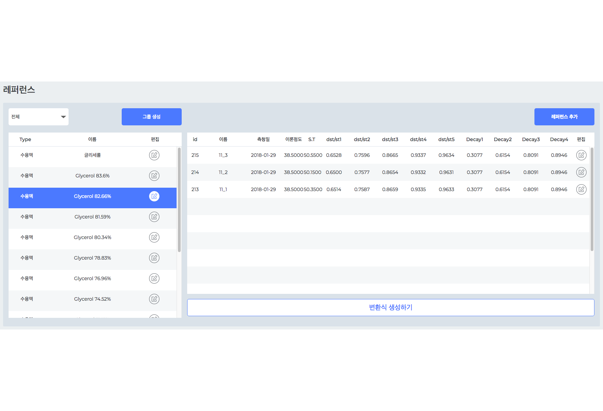

IDST
환자의 혈액 데이터를 통한 질병 통계 예측 서비스입니다.
제공되는 환자의 샘플의 곡률면의 데이터를 기반으로 해당 곡률면과 가장 비슷한 점도를 찾아내어 질병의 데이터화 및 예측하는 서비스입니다.
해당 프로젝트에서는 제공된 데이터와 비슷한 점도를 찾는 계산식을 구축하였으며, 해당 계산시 클러스터링 연산을 하도록 구축하였습니다.
사용자가 볼수 있는 클라이언트단과 제공되는 엑셀/CSV/그래프 등의 다양한 화면 구성을 담당하였습니다.
